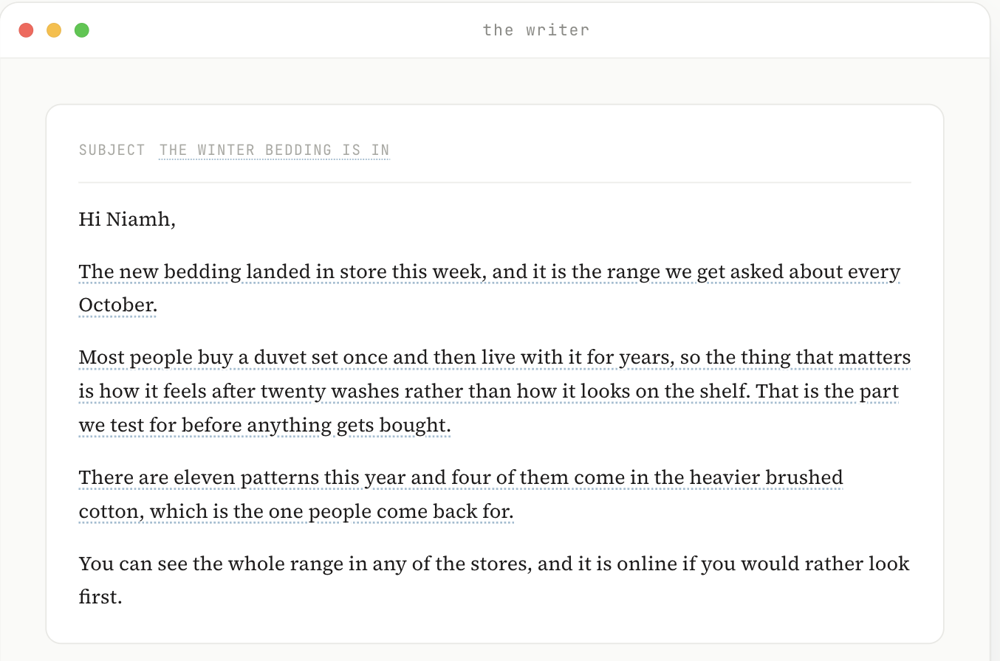
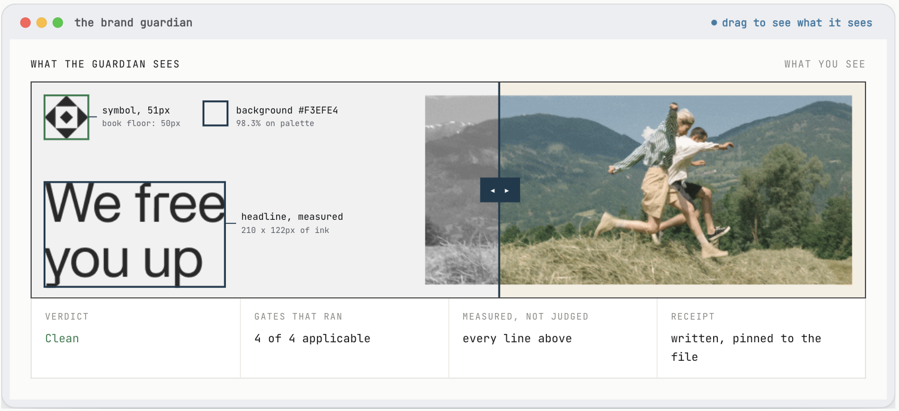
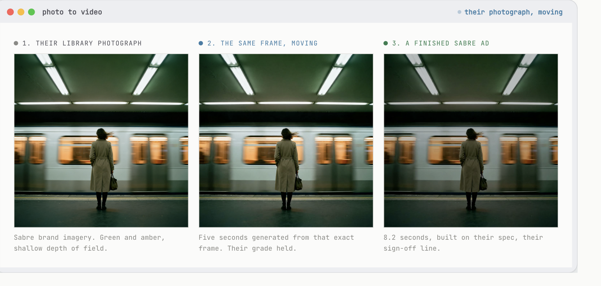

/Runwithfoxes
You asked how we work with brands and teams, and how the business model works. This page answers that.
Most of what follows is our own work on general marketing problems, shown running rather than described, so you can judge the standard for yourself. None of it uses your data or your products, because one call is not enough for us to tell you how Home Store + More should run. At the end there is one recommendation and one price, for the bedding photography we talked about.
Before I build anything, I ask one question: what does really good look like here? Not what AI can do, but what the best version of this marketing would be, and the level of quality and effectiveness I would want to stand over.
So I start where I always have. If there were no AI at all, what team would I hire to do this properly? I map that team first, the one I would build in a world before any of this existed.
Then I build exactly that, with agents instead of hires. The quality bar is set by the team I would have wanted, not by whatever a tool happens to make easy. Twenty years in brand is what tells me where that bar sits: Head of Brand at O2 Ireland, then CMO at the National Lottery, Head of Brand at Indeed and Miro, both global roles. Positioning, messaging and tone written first, then built into everything the agents make.
Ireland’s Marketer of the Year, 2022 · Who I work with: Moloco, Heineken, Norcros, Alltech, Smurfit, Hostelworld, Eaton Square, Weatherbys
“His command of marketing science as well as his instincts for great thinking and ideas are, in my opinion, superb.”
Peter Field, The Godfather of Effectiveness, author of The Long and the Short of It
“Paul reported into me as Head of Brand when I was at Indeed. I have learned more from him than anyone else in my career.”
Paul D’Arcy, CMO, Moloco. Former CMO at Miro and Indeed
I firmly believe that marketing structures, marketing teams and marketing roles are going to change dramatically in the next few years, and the work we do is all around that. We train teams. We build AI agents and capabilities for them, or with them. We work with marketing leaders to re-imagine what future workflows could look like, and we design AI adoption programmes for them.
Three of the agents we build and run are below. They are here so you can see the standard of what comes out rather than read a description of it.
I read a lot about how AI writes slop. It does. But it does not have to, if you spend the time up front. Writers need to know the brand’s positioning, the target audience, the insights and pain points in that category, the messaging and the tone of voice.
On the live page the writer types the email out in front of you, and hovering any dotted line shows which brand document that line came from. The still below is the finished email.

/illustrative. Written by us to show what the writer produces. The range, the patterns and the sender are invented and none of it is your product.
Any asset goes in, gets checked against the brand’s own rules, and comes back either passed or with the specific fixes. It works out what type of asset it is first and then checks it against that type’s pattern, so the gates that run depend on the file.
On the live page you drag a line across the ad to see what the machine measures. The still below has that line held halfway, so the left is what the guardian sees and the right is what you see.

/one of Sabre’s real ads, guarded by the machine we run for them. One verdict, a few seconds per file. A guardian is built for one brand’s book at a time.
The design system converted into code, so anyone on the team can ask for work and get something on brand back. It turns a vague request into a proper brief before it makes anything, following the rules you would teach an art director.

/one of their library photographs, moved. Five seconds generated from that exact frame, then a finished 8.2 second ad built on their spec.
Creating artwork, photography and images, and now videos, that are on-brand is a great use case for AI. I built a library with hundreds of on-brand images when I was at Miro, which gave us consistency, quality and speed.
/twelve travel photographs. Six are Sabre’s and six we generated to match the four subjects their own brand book sets out. None is a stock picture chosen to look similar.
The work shown here is Sabre’s, with their name on it, because we build and run these machines for them. A creative director is built for one brand at a time. Yours would be built to your brand book.
We would build you an agent that does 3D modelling. It runs on Claude Code and Blender. It builds the bed in 3D and then makes the images from it, with whatever pattern and colour you give it. We need three weeks, working from the high res photography you send us.
When it is finished we hand it over so your own team use it themselves. They do not need to be skilled at 3D to run it, and we train them on it.
The 3D modelling agent
Built, handed over and your team trained
€7,500 plus VAT
One off.
Starting with the big companies, and with the one I did from the inside, running the teams rather than advising them.
Moloco
50 to 60 marketers
They wanted to hire a copywriter. I persuaded them to let me build copywriters in AI instead, and they use them all the time. I am also building them a brand guardian, and an AI identity generator, which takes all the elements of their brand identity and reproduces them at speed.
Miro
150 marketers
We were spending about $1.2 million on design and studio work. When I realised what was possible I set a target to reduce it by 20%, and we took $240,000 out inside a year.
Sabre
AI adoption programme, marketing first
I have built them writers, brand guardians, a search agent, a brief coach, and an advertising creative role. We build and run those machines for them, and they are named here because they are happy to be.
Send us the high res bedding photography and say yes, and we start. We would come back to you inside the three weeks with the first beds through the agent so you can see them while the work is still going on.
Prepared for Matthias Wenk, Home Store + More, 28 August 2026. Private.